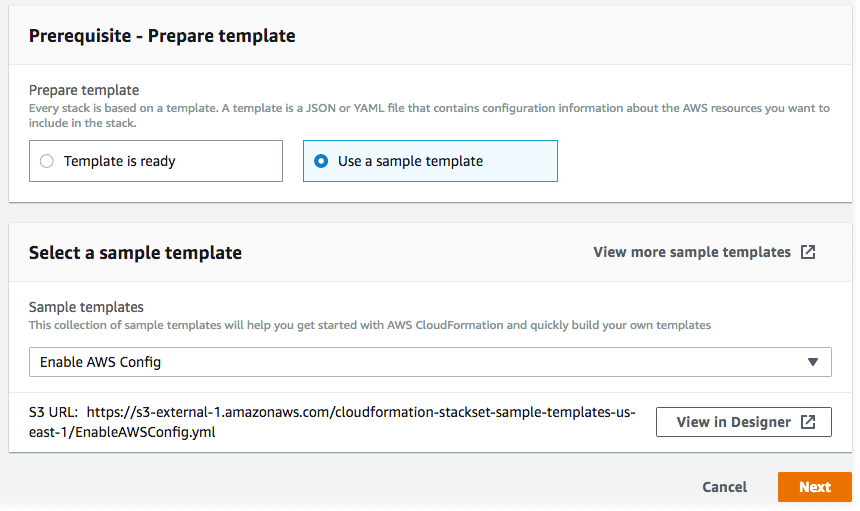

Le traduzioni sono generate tramite traduzione automatica. In caso di conflitto tra il contenuto di una traduzione e la versione originale in Inglese, quest'ultima prevarrà.
Creazione di un set di stack
È possibile creare un set di stack utilizzando la AWS Management Console oppure i comandi AWS CloudFormation in AWS CLI. È possibile creare un set di stack con le autorizzazioni self-managed o service-managed.
Con le autorizzazioni self-managed, puoi implementare le istanze di stack in determinati account Account AWS in specifiche Regioni. A questo scopo, è necessario creare prima di ruoli IAM necessari, per stabilire una relazione di trust tra l'account da cui amministri il set di stack e l'account a cui distribuisci le istanze dello stack.
Con le autorizzazioni service-managed, puoi distribuire le istanze dello stack ad account gestiti da AWS Organizations in specifiche Regioni. Con questo modello, non devi creare i ruoli IAM necessari, in quanto i ruoli IAM vengono creati automaticamente da StackSets. Puoi anche abilitare le distribuzioni automatiche agli account che verranno aggiunti a un'organizzazione o un'unità organizzativa di destinazione in futuro. Con le implementazioni automatiche abilitate, StackSets elimina automaticamente le istanze dello stack da un account, se viene rimosso da un'organizzazione o da un'unità organizzativa di destinazione.
Argomenti
Creazione di un set di stack con autorizzazioni gestite dal cliente
Argomenti
Creazione di un set di stack con autorizzazioni gestite dal cliente utilizzando l'AWS Management Console
Apri la console di AWS CloudFormation all'indirizzo https://console.aws.amazon.com/cloudformation
. -
Nel riquadro di navigazione scegliere StackSets.
-
Nella parte superiore della pagina StackSets, selezionare Create StackSet (Crea StackSet).
-
In Prerequisite - Prepare template (Prerequisito - Prepara modello), scegliere Use a sample template (Utilizza un modello di esempio).
-
In Seleziona un modello di esempio, dal menu a discesa scegli il modello Abilita configurazione AWS. Seleziona Successivo.
 -
Nella pagina Specify StackSet details (Specifica dettagli StackSet), fornire le informazioni seguenti.
-
Fornire un nome per il set di stack. I nomi dei set di stack devono iniziare con un carattere alfabetico e contenere solo lettere, numeri e trattini. In questa procedura guidata, utilizziamo il nome
my-awsconfig-stackset. -
Viene richiesto di specificare i valori per i parametri utilizzati da AWS Config. Per ulteriori informazioni su questi parametri, consulta Configurazione di AWS Config con la console nella Guida per gli sviluppatori di AWS Config. In questa procedura guidata, verranno lasciate le impostazioni predefinite per tutti i parametri AWS Config.
-
È possibile configurare gli aggiornamenti Amazon Simple Notification Service (SNS) tramite e-mail, in base al contenuto dei log, utilizzando i parametri TopicARN e NotificationEmail. Ai fini di questa procedura guidata, non vengono configurati aggiornamenti Amazon SNS.
-
È possibile configurare il canale di distribuzione per gli aggiornamenti e le notifiche utilizzando i parametri DeliveryChannelName e Frequency (Frequenza). Per ulteriori informazioni sul canale di distribuzione in AWS Config, consulta Gestione del canale di distribuzione nella Guida per gli sviluppatori di AWS Config. Ai fini di questa procedura guidata, vengono lasciate le impostazioni predefinite per quest'area.
-
-
Dopo aver specificato i parametri per AWS Config, scegliere Next (Avanti).
-
Nella pagina Configure StackSet options (Configura opzioni StackSet), aggiungere un tag specificando una coppia chiave-valore. In questa procedura guidata, è stato creato un tag denominato Stage (Fase), con un valore di Test. I tag applicati ai set di stack vengono applicati a tutte le risorse create dagli stack. Per ulteriori informazioni sulle modalità di utilizzo dei tag in AWS, consulta Utilizzo dei tag per l'allocazione dei costi nella Guida per l'utente di AWS Billing and Cost Management.
Non specificare Permissions (Autorizzazioni).
-
Per Execution configuration (Configurazione esecuzione), scegli Active (Attiva) in modo che StackSets esegua le operazioni non in conflitto e metta in coda quelle in conflitto. Al termine delle operazioni in conflitto, StackSets avvia le operazioni in coda nell'ordine di richiesta.
Nota
Se sono già presenti operazioni in esecuzione o in coda, StackSets mette in coda tutte le operazioni in entrata anche se non sono in conflitto.
Non è possibile modificare la configurazione di esecuzione del set di stack mentre sono presenti operazioni in esecuzione o in coda per quel set di stack.
-
Seleziona Successivo.
-
Nella pagina Set deployment options (Imposta opzioni di distribuzione), fornire gli account e le Regioni in cui si desidera che vengano distribuiti i set di stack.
AWS CloudFormation distribuirà gli stack negli account specificati all'interno della prima Regione, quindi passerà a quella successiva e così via, purché il numero di distribuzioni non riuscite non superi una tolleranza di errore specificata.
-
Per Accounts (Account), scegliere Deploy stacks in accounts (Distribuisci stack in account). Incollare i numeri di account target nella casella di testo, separando più numeri con virgole.
-
Per Specify regions (Specifica Regioni), selezionare della Regione Stati Uniti orientali (Virginia settentrionale),. Ripetere l'operazione per Stati Uniti occidentali (Oregon). Selezionare la freccia accanto a Stati Uniti occidentali (Oregon) per spostarlo in modo che sia la prima voce nell'elenco. L'ordine delle Regioni in Specify regions (Specifica Regioni) determina l'ordine di distribuzione.
-
Per Deployment options (Opzioni di distribuzione):
-
Per Maximum concurrent accounts (Numero massimo di account simultanei), mantieni i valori predefiniti di Number (Numero) e 1.
In questo modo, AWS CloudFormation distribuirà lo stack in un solo account alla volta.
-
Per Failure tolerance (Tolleranza di errore), mantenere i valori predefiniti di Number (Numero) e 0.
In questo modo, un massimo di una distribuzione di stack può avere esito negativo in una delle Regioni specificate prima che AWS CloudFormation interrompa la distribuzione nella Regione corrente e l'annulli nelle altre Regioni.
-
-
Per la Region concurrency (Simultaneità Regione):
-
Seleziona Sequential (Sequenziale) o Parallel (Parallelo) per determinare l'ordine di implementazione di StackSets per le Regioni specificate. Per impostazione predefinita, è selezionato Sequential (Sequenziale) .
Seleziona Successivo.
-

-
-
Nella pagina Review (Revisione), verificare le proprie scelte e le proprietà del set di stack. Per apportare modifiche, scegliere Edit (Modifica) nell'area in cui si desidera modificare proprietà. Prima di poter creare il set di stack, è necessario indicare nella casella di controllo nell'area Capabilities (Funzionalità) che si prende atto che alcune delle risorse create con il set di stack potrebbero richiedere nuove risorse e autorizzazioni IAM. Per ulteriori informazioni sulle possibili autorizzazioni richieste, consulta Accettazione delle risorse IAM nei modelli AWS CloudFormation in questa guida. Quando sei pronto per creare il set di stack, scegli Submit (Invia).

-
AWS CloudFormation avvia la creazione del set di stack. Visualizzare l'avanzamento e lo stato della creazione degli stack nel set di stack nella pagina dei dettagli che si apre quando si sceglie Submit (Invia).

Creazione di un set di stack con autorizzazioni gestite dal cliente utilizzando l'AWS CLI
Quando viene creato un set di stack utilizzando comandi AWS CLI, vengono eseguiti due comandi distinti: create-stack-set per caricare il modello e creare il container del set di stack e create-stack-instances per creare gli stack all'interno del set di stack. Iniziare eseguendo un comando AWS CLI, create-stack-set, per caricare il modello di esempio AWS CloudFormation che abilita AWS Config, quindi procedere con la creazione del set di stack.
-
Aprire AWS CLI.
-
Esegui il comando seguente.
Per il parametro
--template-url, fornire l'URL del bucket Amazon S3 in cui si sta salvando il modello. Per questa procedura guidata, viene utilizzatomy-awsconfig-stacksetcome valore del parametro--stack-set-name. Attiviamo anche--managed-executionin modo che StackSets esegua contemporaneamente operazioni non in conflitto e metta in coda quelle in conflitto. Al termine delle operazioni in conflitto, StackSets avvia le operazioni in coda nell'ordine di richiesta.Nota
Se sono già presenti operazioni in esecuzione o in coda, StackSets mette in coda tutte le operazioni in entrata anche se non sono in conflitto.
Non è possibile modificare la configurazione di esecuzione del set di stack mentre sono presenti operazioni in esecuzione o in coda per quel set di stack.
aws cloudformation create-stack-set \ --stack-set-name my-awsconfig-stackset \ --template-url https://s3.amazonaws.com/cloudformation-stackset-sample-templates-us-east-1/EnableAWSConfig.yml -
Quando il comando
create-stack-setviene completato, eseguire il comandolist-stack-setsper verificare che il set di stack sia stato creato. Il nuovo set di stack dovrebbe essere visibile nei risultati.aws cloudformation list-stack-sets -
Eseguire il comando
create-stack-instancesAWS CLI per aggiungere istanze di stack al set di stack. In questa procedura guidata, vengono utilizzatius-west-2eus-east-1come valori del parametro--regions.Configurare la tolleranza di errore e il numero massimo di account simultanei impostando
FailureToleranceCountsu0eMaxConcurrentCountsu1nel parametro--operation-preferences, come mostrato nel seguente esempio. Per applicare percentuali, utilizzare inveceFailureTolerancePercentageoMaxConcurrentPercentage. Ai fini di questa procedura guidata, viene utilizzato il numero, non la percentuale.Nota
Il valore di
MaxConcurrentCountdipende dal valore diFailureToleranceCount.MaxConcurrentCountè al massimo di un'unità superiore al valore diFailureToleranceCount.aws cloudformation create-stack-instances \ --stack-set-name my-awsconfig-stackset \ --accounts '["account_ID_1","account_ID_2"]' \ --regions '["region_1","region_2"]' \ --operation-preferences FailureToleranceCount=0,MaxConcurrentCount=1Nota
La simultaneità delle implementazioni di istanze StackSet nell'operazione dipende dal valore di
FailureToleranceCount-MaxConcurrentCounted è al massimo di un'unità superiore aFailureToleranceCount.Importante
Attendere che un'operazione sia completata prima di avviarne un'altra. È possibile eseguire soltanto un'operazione alla volta.
-
Verificare che la creazione delle istanze di stack abbia avuto esito positivo. Eseguire
DescribeStackSetOperationcon l'operation-idrestituito come parte dell'output della fase 4.aws cloudformation describe-stack-set-operation \ --stack-set-name my-awsconfig-stackset \ --operation-idoperation_ID
Creazione di un set di stack con autorizzazioni gestite dal servizio
Argomenti
Considerazioni sulla creazione di un set di stack con autorizzazioni gestite dal servizio
Prima di creare un set di stack con autorizzazioni gestite dai servizi, considera quanto segue:
-
I set di stack con le autorizzazioni gestite dai servizi vengono creati nell'account di gestione, inclusi i set di stack creati dagli amministratori delegati.
-
Il set di stack può essere destinato all'intera organizzazione o a specifiche unità organizzative. Se il set di stack è destinato all'organizzazione, è destinato anche a tutti gli account in tutte le unità organizzative dell'organizzazione. Se il set di stack è destinato a specifiche unità organizzative, è destinato anche a tutti gli account al loro interno.
-
Se il set di stack è destinato a un'unità organizzativa padre, è destinato anche a tutte le unità organizzative figlio.
-
Più set di stack possono essere destinati alla stessa organizzazione o unità organizzativa.
-
Il set di stack non può essere destinato ad account esterni all'organizzazione.
-
Il set di stack non può distribuire stack nidificati.
-
StackSets non distribuisce istanze dello stack all'account di gestione dell'organizzazione, anche se tale account si trova nell'organizzazione o in un'unità organizzativa al suo interno.
-
La distribuzione automatica viene impostata a livello di set di stack. Non è possibile regolare le distribuzioni automatiche in modo selettivo per unità organizzative, account o Regioni.
-
Le autorizzazioni dell'entità principale IAM (utente, ruolo o gruppo) utilizzate per accedere all'account di gestione determinano se si è autorizzati a eseguire la distribuzione con StackSets. Per una policy IAM di esempio che concede le autorizzazioni per la distribuzione a un'organizzazione, consulta Policy di esempio che concede autorizzazioni del set di stack gestito dal servizio.
-
Gli amministratori delegati dispongono delle autorizzazioni complete per la distribuzione negli account dell'organizzazione. L'account di gestione non può limitare le autorizzazioni di amministratore delegato per la distribuzione in unità organizzative specifiche o per eseguire operazioni specifiche del set di stack.
Creazione di un set di stack con autorizzazioni gestite dal servizio utilizzando la console AWS CloudFormation
-
Apri la console di AWS CloudFormation all'indirizzo https://console.aws.amazon.com/cloudformation
. -
Nel riquadro di navigazione scegliere StackSets.
-
Nella parte superiore della pagina StackSets, selezionare Create StackSet (Crea StackSet).
-
In Prepare template (Prepara modello), scegliere Template is ready (Il modello è pronto).
-
In Specify template (Specifica modello), scegliere di specificare l'URL per il bucket S3 che contiene il modello di stack oppure caricare un file modello di stack. Seleziona Successivo.
-
Nella pagina Specify StackSet details (Specifica i dettagli StackSet) specificare un nome per il set di stack, specificare eventuali parametri e quindi scegliere Next (Avanti).
-
Nella pagina Configure StackSet options (Configura opzioni StackSet) in Tags, specificare eventuali tag da applicare alle risorse nello stack.
-
In Permissions (Autorizzazioni) scegliere Service-managed permissions (Autorizzazioni gestite dal servizio).
Se l'accesso sicuro con AWS Organizations è disabilitato, viene visualizzato un banner. L'accesso sicuro è necessario per creare o aggiornare un set di stack con autorizzazioni gestite dal servizio. Solo l'amministratore nell'account di gestione dell'organizzazione dispone delle autorizzazioni per Attiva l'accesso attendibile con AWS Organizations.

-
Per Execution configuration (Configurazione esecuzione), scegli Active (Attiva) in modo che StackSets esegua le operazioni non in conflitto e metta in coda quelle in conflitto. Al termine delle operazioni in conflitto, StackSets avvia le operazioni in coda nell'ordine di richiesta.
Nota
Se sono già presenti operazioni in esecuzione o in coda, StackSets mette in coda tutte le operazioni in entrata anche se non sono in conflitto.
Non è possibile modificare la configurazione di esecuzione del set di stack mentre sono presenti operazioni in esecuzione o in coda per quel set di stack.
-
Scegli Avanti per procedere e attivare l'accesso attendibile, se non è già attivato.
-
Nella pagina Set deployment options (Imposta opzioni di distribuzione) in Deployment targets (Destinazioni di distribuzione), scegliere gli account dell'organizzazione a cui eseguire la distribuzione.
-
Scegliere Deploy to organization (Distribuisci all'organizzazione per eseguire la distribuzione a tutti gli account dell'organizzazione.

-
Scegliere Deploy to organizational units (OUs) (Distribuisci alle unità organizzative) per eseguire la distribuzione a tutti gli account in specifiche unità organizzative. Scegliere Add an OU (Aggiungi un'unità organizzativa) e quindi incollare l'ID dell'unità organizzativa di destinazione nella casella di testo. Ripetere per ogni nuova unità organizzativa di destinazione.

-
-
In Automatic deployment (Distribuzione automatica), scegliere se StackSet verrà distribuito automaticamente agli account che in futuro verranno aggiunti all'organizzazione o alle unità organizzative di destinazione.

-
Se è stata abilitata la distribuzione automatica, in Account removal behavior (Comportamento rimozione account) scegliere se le risorse dello stack vengono mantenute o eliminate quando un account viene rimosso da un'organizzazione o da un'unità organizzativa di destinazione.

Nota
Con l'opzione Retain stacks (Mantieni stack) selezionata, le istanze dello stack vengono rimosse dal set di stack, ma gli stack e le relative risorse associate vengono mantenuti. Le risorse rimangono nello stato corrente, ma non faranno più parte del set di stack.
-
Per Deployment regions (Regioni distribuzione), selezionare le Regioni in cui distribuire le istanze dello stack. Seleziona Successivo.
-
Nella pagina Review (Esamina), verifica che StackSets esegua l'implementazione negli account corretti nelle Regioni giuste, quindi scegli Create StackSet (Crea StackSet).
Viene visualizzata la pagina StackSet details (Dettagli StackSet). Puoi visualizzare l'avanzamento e lo stato della creazione degli stack nel set di stack.
Creazione di un set di stack con autorizzazioni gestite dal servizio utilizzando l'AWS CLI
Quando si creano set di stack utilizzando AWS CLI, si eseguono due comandi separati. Durante create-stack-set, si carica il modello, si crea il container del set di stack e si gestiscono le distribuzioni automatiche. Durante create-stack-instances, è possibile creare istanze di stack in specifici account di destinazione.
Quando si agisce come amministratore delegato, è necessario impostare il parametro --call-as su DELEGATED_ADMIN ogni volta che si esegue un comando StackSets.
--call-asDELEGATED_ADMIN
I set di stack creati da un amministratore delegato vengono creati nell'account di gestione dell'organizzazione.
-
Aprire AWS CLI.
-
Esegui il comando
create-stack-set.Nell'esempio seguente vengono abilitate le implementazioni automatiche per consentire a StackSets di eseguire automaticamente l'implementazione negli account che in futuro verranno aggiunti all'organizzazione o alle unità organizzative di destinazione. Vengono mantenute le risorse dello stack quando un account viene rimosso da un'organizzazione o da un'unità organizzativa di destinazione. Attiviamo anche
--managed-executionin modo che StackSets esegua contemporaneamente operazioni non in conflitto e metta in coda quelle in conflitto. Al termine delle operazioni in conflitto, StackSets avvia le operazioni in coda nell'ordine di richiesta.Nota
Se sono già presenti operazioni in esecuzione o in coda, StackSets mette in coda tutte le operazioni in entrata anche se non sono in conflitto.
Non è possibile modificare la configurazione di esecuzione del set di stack mentre sono presenti operazioni in esecuzione o in coda per quel set di stack.
aws cloudformation create-stack-set \ --stack-set-nameStackSet_myApp\ --template-urlhttps://s3.us-west-2.amazonaws.com/cloudformation-templates-us-west-2/MyApp.template\ --permission-modelSERVICE_MANAGED\ --auto-deployment Enabled=true,RetainStacksOnAccountRemoval=true -
Quando termina l'esecuzione del comando
create-stack-set, eseguire il comandolist-stack-setsper verificare che il set di stack sia stato creato. Il nuovo set di stack viene elencato nei risultati.aws cloudformation list-stack-sets-
Se imposti il parametro
--call-assuDELEGATED_ADMINmentre utilizzi l'account membro,list-stack-setsrestituisce tutti i set di stack con autorizzazioni gestite dai servizi nel account di gestione dell'organizzazione. -
Se imposti il parametro
--call-assuSELFmentre utilizzi l'account AWS,list-stack-setsrestituisce tutti i set di stack autogestiti nel tuo account AWS. -
Se imposti il parametro
--call-assuSELFmentre utilizzi il account di gestione dell'organizzazione,list-stack-setsrestituisce tutti i set di stack nel account di gestione dell'organizzazione.
-
-
Eseguire il comando
create-stack-instancesper aggiungere istanze di stack al set di stack. Per il parametro--deployment-targets, specificare l'ID root dell'organizzazione per eseguire la distribuzione a tutti gli account dell'organizzazione oppure specificare gli ID delle unità organizzative per eseguire la distribuzione a tutti gli account in tali unità organizzative. In questo esempio sono specificate le unità organizzative con gli IDou-rcuk-1x5j1lwoeou-rcuk-slr5lh0a.aws cloudformation create-stack-instances --stack-set-nameStackSet_myApp--deployment-targets OrganizationalUnitIds='["ou-rcuk-1x5j1lwo", "ou-rcuk-slr5lh0a"]' --regions '["eu-west-1"]'Importante
Attendere che un'operazione sia completata prima di avviarne un'altra. È possibile eseguire soltanto un'operazione alla volta.
-
Utilizzando l'
operation-idrestituito come parte dell'outputcreate-stack-instancesnel passaggio 4, eseguiredescribe-stack-set-operationper verificare che le istanze dello stack siano state create correttamente.